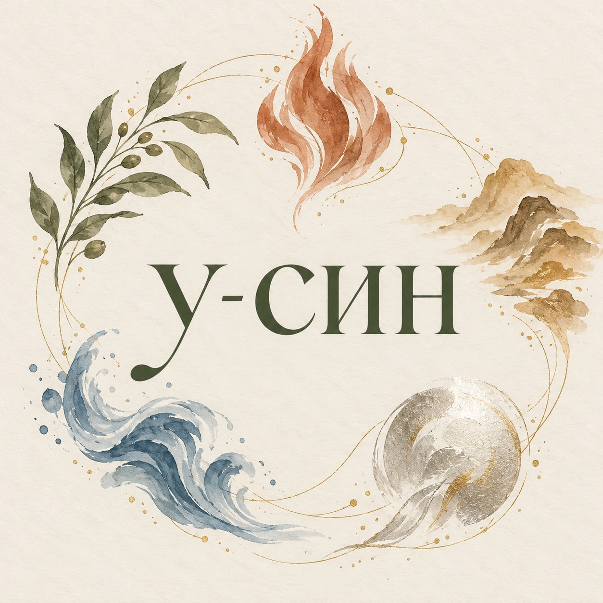
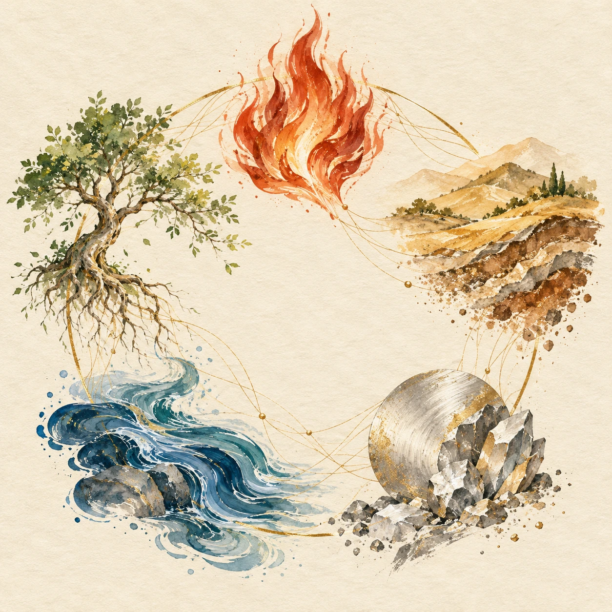
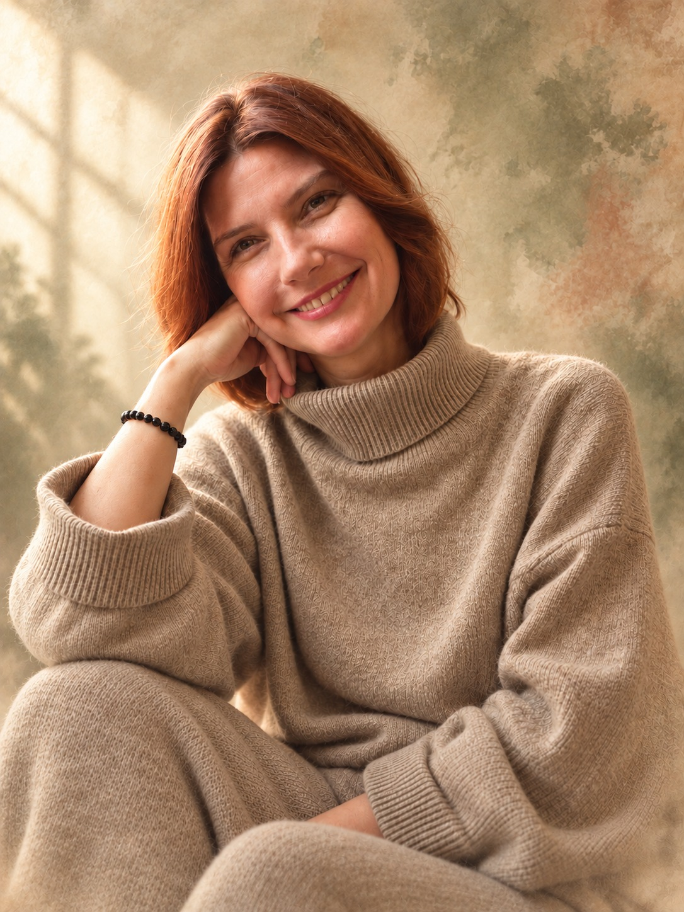

Ориентироваться
в системе
Рассмотрим взаимоотношения меридианов, связи пяти элементов и суточное колесо — с примерами из повседневной жизни.
Пять элементов, двенадцать взаимоотношений в меридианах и практика внимательного отношения к себе.
Познакомиться с курсом ↓

И было целое — Дао. И поделилось оно на два — инь-ян. И из двух получилось три — три сокровища. И из трёх родилось пять — пять элементов. А из пяти — десять тысяч вещей, или великое множество.
На курсе мы обратимся к пяти элементам и двенадцати взаимоотношениям в меридианах. Посмотрим, как они связаны в традиционной китайской системе и как проявляются в нашей повседневной жизни.
Мы не будем изучать меридианы в классическом варианте. Пусть вас это не смущает. Мы будем рассматривать взаимоотношения меридианов внутри человеческой системы — как сочетания струн, из которых складываются аккорды. Познакомимся с мышечным тестированием и последовательно освоим практику работы с точками.
Курс предназначен для домашнего применения и не является программой профессиональной переподготовки.
Сложные знания будем разбирать простыми словами, через объяснение, демонстрацию и собственную практику.
У каждого будет время попробовать, задать вопрос и повторить движение с поддержкой ведущей.
Рассмотрим взаимоотношения меридианов, связи пяти элементов и суточное колесо — с примерами из повседневной жизни.
Будем учиться находить специфические точки, выполнять мышечный тест с партнёром и самотест.
Разберём связи точек и отработаем последовательность балансирования для самостоятельной практики.
Освоим несколько дополнительных практик, направленных на расслабление нервной системы и снижение напряжения.
Познакомимся с «бинарным языком тела» в рамках метода и внедрим в практику невербальный язык мудр (телесных проб).
Освоение навыка продолжается после курса. Вопросы из самостоятельной практики можно будет приносить в общий чат.
Подробная программа курса ↗Три дня последовательного знакомства с системой и практикой.
19 ноября • Энергии и их взаимоотношения
Знакомство с видами энергии в рамках традиционной системы: их характеристики, задачи и символика.
Два взаимодополняющих начала. Их качества, взаимодействие и проявления в повседневной жизни.
Знакомство с тремя сокровищами, их характеристиками, символикой и взаимоотношениями в традиционной китайской системе.
Характеристики пяти элементов и взаимодействие между ними. Питающий и контролирующий циклы.
Знакомство с символикой двенадцати меридианов с акцентом на их взаимоотношения внутри человеческой системы.
Периоды активности меридианов в течение суток в традиционной китайской системе. Рассмотрение связей и последовательности суточного колеса.
Расположение меридианов на теле. Знакомство со специфичными точками и ориентирами для их нахождения.
20 ноября • Мышечный тест и телесные пробы
Переходим от знакомства с системой к освоению практических приёмов. Ведущая показывает технику, затем участники пробуют её в парах и самостоятельно.
Что понимается под мышечным тестированием в рамках курса. Порядок проведения теста, положение тела и взаимодействие с партнёром.
Гипо-, гипер- и нормальный ответ: значения этих терминов в используемом методе. Наблюдение за различиями мышечного ответа при выполнении теста.
Значение воды и других факторов, которые учитываются при подготовке к мышечному тесту и его проведении. Внимание к условиям тестирования и повторяемости наблюдений.
Знакомство с техникой, принятой в методе, её демонстрация и практическая отработка. Наблюдение за собственными ощущениями до и после упражнения.
Работа с энергетическими проекциями почек в рамках изучаемой системы. Объяснение, демонстрация и практика.
Знакомство с понятием бинарного языка тела в рамках метода. Различение вариантов мышечного отклика и работа с формулировкой пробы.
Невербальный язык мудр и его сочетание с мышечным тестированием. Телесные пробы: выполнение, наблюдение за ответом и обсуждение практики.
21 ноября • Углубление и вариативность практики
Соединяем освоенные приёмы, рассматриваем разные способы тестирования и разбираем затруднения, возникающие во время практики.
Использование проприоцептивных качеств — ощущения положения и движения собственного тела — и вестибулярных стимулов для углублённой работы с выбранной темой. Практика с учётом индивидуального комфорта.
Рассмотрение связи мышечного тестирования с сознательными и бессознательными процессами в рамках подхода курса. Внимание к роли ожиданий, формулировок и интерпретации ответа.
Разные варианты мышечного теста и самотеста. Сочетание освоенных способов работы, телесных проб и мудр.
Неясные и меняющиеся ответы, затруднения при выполнении теста. Разбор вопросов участников, повторная отработка приёмов и обсуждение ограничений интерпретации.
Участники получают методическое пособие с картами меридианов, схемами точек и балансирования, местом для записей. После курса продолжается сопровождение в общем чате без ограничения срока.
Границы метода. Энергии, проекции, символика и «бинарный язык тела» рассматриваются как понятия изучаемого подхода. Мышечный отклик не является диагностикой заболеваний, аллергии или переносимости веществ и не служит основанием для назначения или отмены лечения.
Небольшая группа позволяет показывать, наблюдать и разбирать вопросы по ходу работы. Каждый участник попробует упражнения в паре и самостоятельно.
С собой — удобная одежда и сменная обувь. Всё остальное будем осваивать постепенно.
Объяснение темы и демонстрация ведущей.
Практика в парах, поиск точек и отработка самотеста.
Методическое пособие Лекториума: карты меридианов, схемы точек и балансирования, место для записей. После курса — общий чат для вопросов.

Педагог, кинезиолог, специалист по профилактике и оздоровлению организма.
На курсе перенесём материал Лекториума в очную работу: будем разбирать связи, учиться находить точки и применять изученное на практике.
«Человек на первом месте. Возможность улучшать своё качество жизни — первостепенная задача».
Основу для самостоятельной практики и более внимательного отношения к своим ощущениям. Освоенные навыки можно включать в комплементарный подход к здоровью — в дополнение к необходимой медицинской помощи.
Навыки мышечного тестирования и самотеста в рамках метода, поиска точек, применения мудр и выполнения освоенной последовательности балансирования.
Практики для работы с эмоциональным напряжением, подготовки ко сну и наблюдения за своим уровнем жизненных сил.
Внимательное наблюдение за пищевыми привычками и ощущениями со стороны ЖКТ. Улучшение сна, пищеварения и уровня энергии — возможные личные цели, а не гарантированный результат курса.
Знакомство с тем, как в рамках метода применяют мышечный тест при работе с эфирными маслами, продуктами и БАДами, и с ограничениями такой практики.
Мышечный тест не определяет аллергию, безопасность, эффективность или необходимую дозировку продуктов, эфирных масел и БАДов. В рамках курса он используется для наблюдения за индивидуальным мышечным откликом; такой отклик не подтверждает переносимость перечисленных веществ. На его основании нельзя назначать или отменять лечение.
Обучение, методическое пособие и сопровождение в общем чате.
Предоплата — 30%. Остаток вносится к началу обучения.
Если планы изменились, предоплата возвращается полностью при отмене в любой момент до начала обучения.
Нет. Начнём с основ. Объяснения будем чередовать с демонстрациями и практикой.
Сопровождение в общем чате не ограничено по сроку. Здесь можно задавать вопросы, возникающие в самостоятельной практике после курса.
Сертификат не предусмотрен. Курс предназначен для личной практики.
Удобную одежду и сменную обувь. Методичка с картами меридианов и схемами точек входит в участие.
Улица Нежинская, 5, строение 1
Курс: 19–21 ноября 2026 года.
Для записи и вопросов — личный Telegram Ольги.
Ссылка на Telegram будет добавлена в следующую версию.